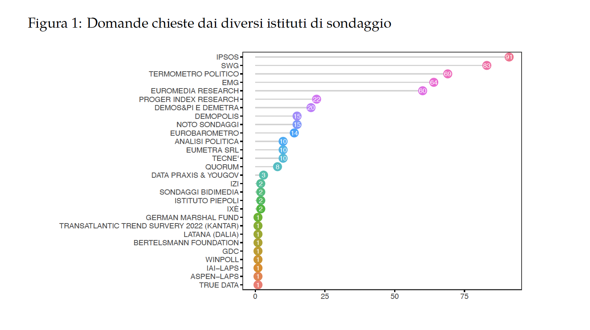
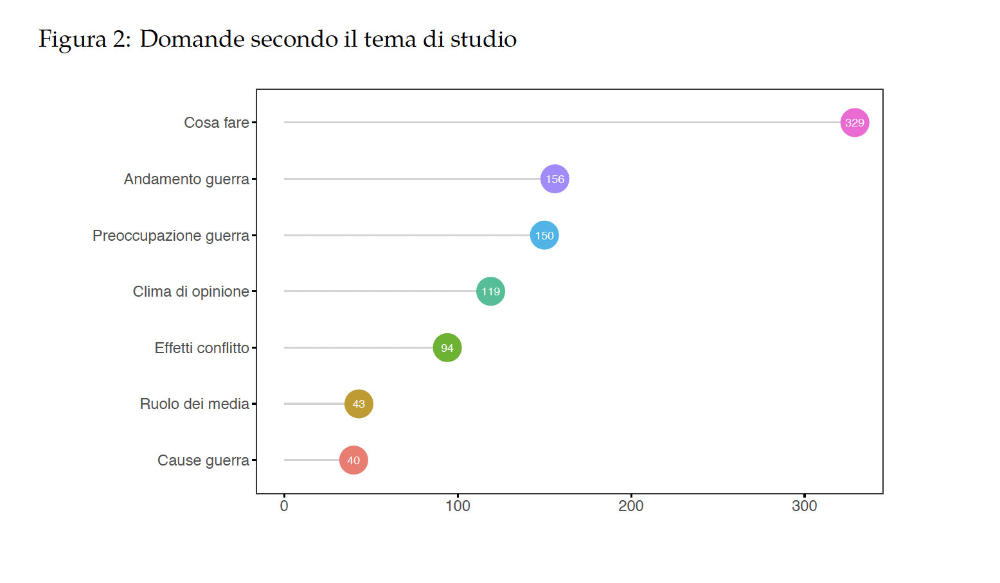
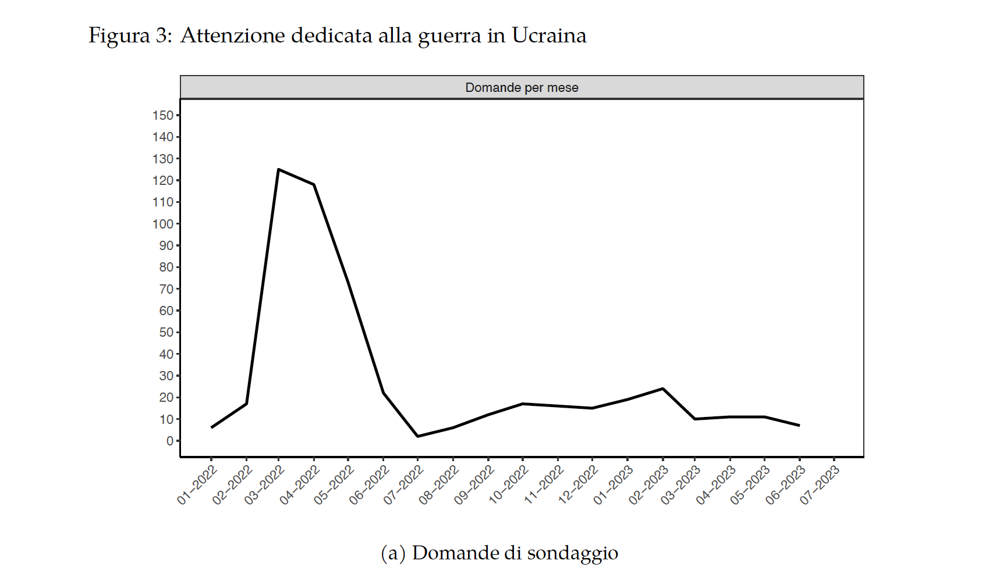
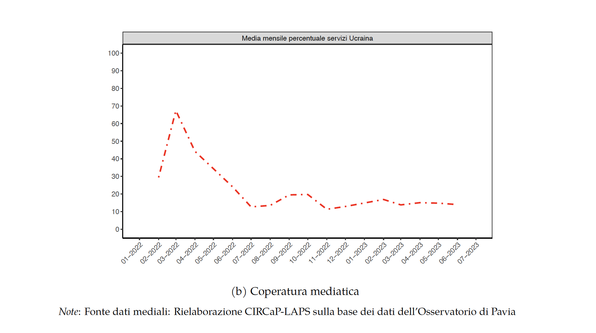

CAPITOLO 1 INTRODUZIONE
1.1 La guerra e l’opinione pubblica italiana
Nel tentativo di offrire agli studiosi, ai commentatori, ai giornalisti e al pubblico un quadro articolato e preciso della natura degli atteggiamenti dell’opinione pubblica italiana nei confronti della guerra in Ucraina, abbiamo raccolto, in un repository su github, le distribuzioni di frequenza delle risposte a tutte le domande poste dai sondaggi condotti in Italia sul tema, tra il febbraio 2022 e il giugno 2023, che siamo riusciti a rintracciare attingendo a fonti disponibili pubblicamente. Durante questo periodo sono state condotte in Italia decine di indagini nelle quali sono state poste centinaia di domande, dirette a sondare gli atteggiamenti degli italiani sui più svariati aspetti della guerra in Ucraina.
La convinzione che motiva questa raccolta è che su tematiche controverse come appunto quella in oggetto, accanto ad analisi multivariate delle determinanti individuali degli atteggiamenti, sia particolarmente utile una valutazione aggregata delle opinioni del pubblico. Guardare alla foresta delle domande disponibili, piuttosto che al singolo albero che di essa fa parte, consente di analizzare l’opinione pubblica in maniera più sistematica e sfaccettata, evidenziando la complessità delle opinioni e cogliendo possibili evoluzioni nel tempo.
Inoltre, il diverso modo di formulare le domande, frutto degli interessi spesso congiunturali dell’istituto di sondaggio o del committente della ricerca, consente di esplorare con qualche profondità le ragioni alla base degli atteggiamenti degli italiani. Come vedremo, la comparazione tra domande offerte con formulazioni diverse mostra l’importanza che il formato ed il contenuto delle domande hanno su tematiche complesse, caratterizzate da ampi margini di incertezza, nelle quali l’effetto di framing esercita una influenza nell’orientare le risposte degli intervistati. Il problema del cosiddetto question wording, lungi dall’essere un fattore di disturbo, una dimostrazione del fatto che con i sondaggi “si può far dire di tutto alla gente”, costituisce invece una risorsa preziosa per interpretare cosa abbiano in mente gli intervistati quando rispondono ad una domanda e quali argomenti possono indurli a orientare le loro risposte in una direzione piuttosto che l’altra (Sudman e Bradburn 1974).
Contrariamente a quanto avvenuto in altri Paesi (per esempio nel caso della Germania, si veda Mader e Schoen 2022), solo pochi studi esplorano l’opinione pubblica italiana sulla guerra. Bordignon, Diamanti, e Turato (2022) riportano che la guerra ha contribuito a un calo della polarizzazione destra-sinistra negli atteggiamenti verso la Russia subito dopo l’inizio del conflitto. Isernia e Martini (2023) hanno analizzato le determinanti degli atteggiamenti verso le sanzioni e la spedizione di armi nel settembre 2022, mentre Basile, Isernia, e Martini (2023) hanno discusso le diverse posizioni dell’elettorato italiano sulla guerra prima delle elezioni parlamentari del settembre 2022. Tuttavia, finora, non è stata pubblicata alcuna analisi sistematica e a lungo termine su ciò che gli italiani pensano dei diversi aspetti di questa guerra. Questo volume è un primo tentativo di colmare questa mancanza.
1.2 Il metodo e i dati raccolti
Per ottenere lo scopo prefissato, quello di analizzare come l’opinione italiana ha reagito di fronte all’invasione su vasta scala dell’Ucraina da parte della Russia e all’escalation del conflitto, sono state raccolte tutte le domande rese pubblicamente disponibili sul sito sondaggipoliticoelettorali.it e sui siti dei principali istituti di sondaggio (segnatamente IPSOS,EMG ed SWG con il bollettino settimanale Radar). Nel complesso sono state individuate 931 domande, 511 delle quali (il 54,9%) sono state poste una sola volta nel periodo considerato, mentre le altre 420 sono state poste almeno due volte nel tempo. Come riportato dalla figura 1, cinque istituti (IPSOS, SWG, Termometro Politico, EMG e Euromedia Research) hanno posto nel tempo più di due terzi delle domande complessive, mentre il resto è stato chiesto da 23 istituti diversi.
 La raccolta sistematica di informazioni diretta a costruire questo repository offre anche una idea sul modo in cui gli istituti di sondaggio italiani affrontano temi pubblici di attualità che si prolungano nel tempo, come appunto la guerra Ucraina. La figura 2 riporta quali sono state le aree tematiche coperte dalle 931 domande poste nel tempo, organizzate nel modo in cui sono discusse e presentate in questo volume. Un terzo circa delle domande copre i temi collegati a cosa l’Italia, l’UE e la NATO possono fare per aiutare l’Ucraina a resistere all’aggressione russa, mentre il 17% delle domande sonda la valutazione che gli italiani danno dell’andamento del conflitto. E circa lo stesso numero esplora le fonti delle preoccupazioni degli italiani per la guerra.Attenzione molto minore è stata dedicata dagli istituti di sondaggio al ruolo dei media nel conflitto, un tema questo di qualche interesse per valutare la percezione del climandi opinione delle persone, e alle cause della guerra.

La maggioranza degli istituti di sondaggio ha inoltre mostrato scarsa attenzione per la continuità delle domande nel tempo, un aspetto, quello dell’analisi delle tendenze dell’opinione pubblica a livello aggregato, particolarmente utile quando si tratta di analizzare un fenomeno in evoluzione. I pochi trends disponibili sono stati realizzati soprattutto grazie a IPSOS e, in misura minore, a EMG, mentre molto più discontinua e ad hoc è stata la produzione di dati da parte di altri istituti che pur hanno dedicato a questa tematica qualche risorsa, come SWG.
Inoltre, l’attenzione per questo tema è scemata nel corso del tempo. Lo testimonia ad esempio il fatto che IPSOS, l’istituto che insieme a SWG e EMG, ha monitorato con più sistematicità le opinioni degli italiani sul conflitto, ha progressivamente rarefatto le rilevazioni del suo tracking sull’Ucraina, già dalla fine del 2022 e ora solo sporadicamente pone domande su questo tema. La figura 3 mostra l’andamento dell’attenzione dedicata dagli istituti di sondaggio (a) – misurata dal numero totale di domande poste nel mese – comparandolo con l’andamento dell’attenzione dedicata al tema dell’Ucraina dai notiziari televisivi in prime time dei tre principali canali televisivi (TG1, La7 e TG5) (b), misurata in percentuale del tempo dedicato all’Ucraina in media in ciascun notiziario nel corso del mese. Le due serie sono largamente sovrapponibili e mostrano, senza alcuna pretesa di stabilire un nesso di causalità, come i due andamenti siano largamente simili. L’attenzione e la copertura demoscopica è stata massima allo scoppio del conflitto, per poi diminuire nel tempo e stabilizzarsi a partire dall’estate del 2022, con un leggero aumento dell’interesse nel periodo settembre-ottobre 2022, presumibilmente per effetto delle elezioni parlamentari nazionali. A partire dal marzo 2023 questo interesse è ulteriormente calato, per collocarsi a poche domande al mese.
 
Va, infine, segnalato che la guerra russo-ucraina è stata oggetto di una certa attenzione comparata, con diverse indagini condotte contemporaneamente in più paesi, prevalentemente europei. Si segnalano qui in particolare le indagini Eurobarometro (che ha inserito domande sull’Ucraina in diverse indagini nel corso del periodo coperto da questo rapporto) e quelle di SWG (Euroskopia), YOUGOV, NATO e German Marshall Fund of the United States con il Transatlantic Trend Survey. In questo campo sono state però soprattutto le ricerche condotte in ambito accademico a fornire le informazioni più sistematiche e approfondite, in particolare le rilevazioni EUOpinions, dell’Istituto Universitario Europeo, e quella del Volkswagen Project in dieci paesi europei. Nel repository sono state considerate solo le indagini comparate che comprendono anche l’Italia.
1.2.1 Le tematiche coperte e la struttura del libro
Questo volume è organizzato per aree tematiche, nello specifico:
le preoccupazioni per la guerra e i suoi effetti, sia in assoluto che rispetto ad altre problematiche di politica interna;
le cause della guerra e le responsabilità per il suo scoppio, con riferimento anche alla percezione della Russia e di Putin;
la guerra e il suo andamento. Questa sezione si sofferma su quattro ordini di temi;
le aspettative circa la sua durata e il suo possibile esito (chi vincerà?);
il rischio di escalation militare (ad esempio con il possibile ricorso alle armi nucleari) e politica (ad esempio con una possibile estensione del conflitto ad altri paesi, segnatamente quelli della NATO);
l’atteggiamento verso specifiche richieste da parte ucraina, come quella di una No-Fly-Zone nel mese di marzo, o di armi pesanti a partire da aprile 2022;
le opinioni sulle condizioni che consentono di porre fine al conflitto nonché le valutazioni di eventuali negoziati;
il ruolo del nostro paese nel conflitto, con particolare riferimento alla decisione italiana di inviare armi, imporre sanzioni, aumentare le spese militari e, in via del tutto ipotetica, sia contribuire direttamente con le nostre truppe ad interventi militari multilaterali, sia valutare una possibile accessione dell’Ucraina alla NATO, all’Unione Europea e l’eventuale costituzione di un esercito unico europeo;
gli effetti del conflitto, con particolare riferimento agli effetti economici delle sanzioni, quelli politici dei migranti e quelli relativi al sostegno per l’Unione Europea;
la percezione del clima di opinione in relazione anche alla simpatia nutrita per l’Ucraina e la Russia nonché i giudizi riservati nei confronti dei rispettivi leader;
Il ruolo dei media e la percezione su come i media forniscano notizie sull’Ucraina.
Ogni sezione è aperta da una breve sintesi dei principali risultati che emergono dai dati disponibili. Ciascuna sezione si apre con alcuni aspetti metodologici relativi al modo in cui sono formulate le domande e ai loro effetti sulle distribuzioni delle risposte, poi viene offerta una descrizione degli atteggiamenti e della loro evoluzione nel tempo e infine, quando possibile, le posizioni dell’opinione pubblica italiana vengono comparate a quelle di altri paesi. Alla fine di ciascuna sezione del volume online vi è un’appendice che rimanda attraverso apposito link al repository contenente tutti i dati e le tabelle di tutte le domande poste su ciascuna tematica, con le distribuzioni di frequenza, il testo della domanda in italiano, la numerosità campionaria e la fonte dei dati.